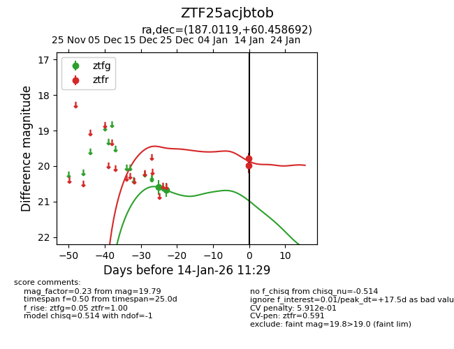
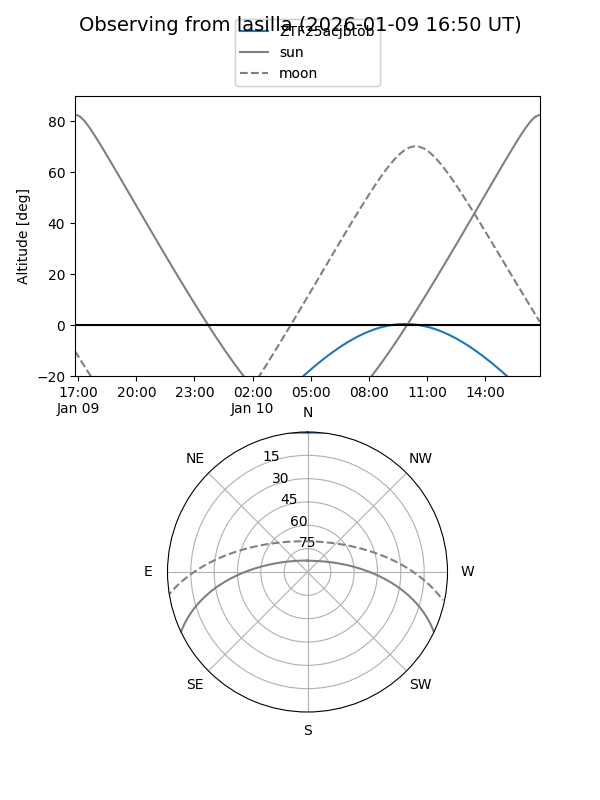
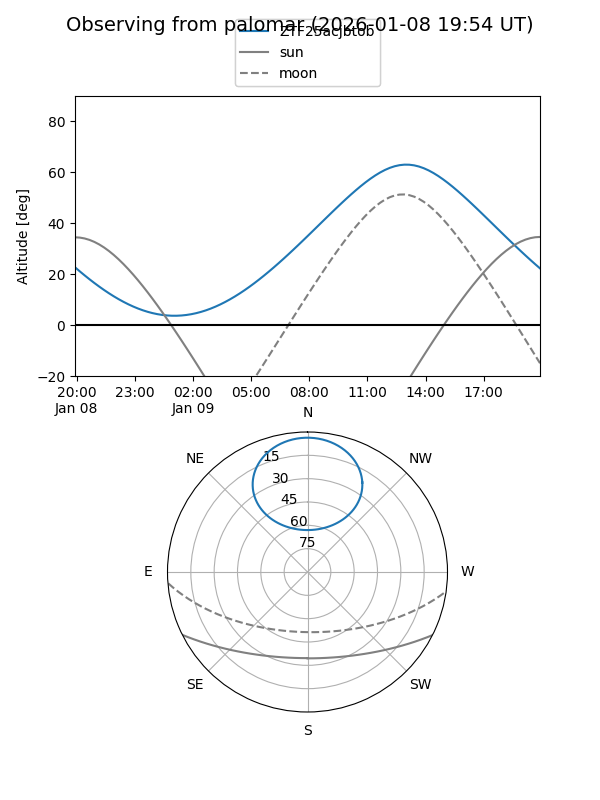

ZTF25acjbtob
Target ZTF25acjbtob at 2025-12-31 17:00
Aliases and brokers:
FINK:
Lasair:
ALeRCE:
alt names
ZTF25acjbtob (ztf,fink_ztf)
Coordinates:
equatorial (ra, dec) = 187.0119,+60.45869
equatorial (HMS+DMS) = 12:28:02.85,+60:27:31.29
galactic (l, b) = (128.1445,+56.43221)
Flags:
Photometry:
last ztfg=20.67
2 ztfg detections
Lightcurve

Visibility


Additional plots